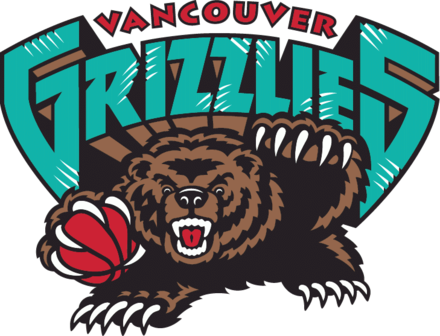
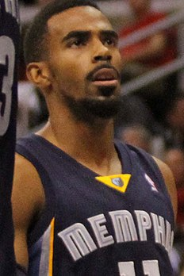

Histoire des Memphis Grizzlies:
Les Grizzlies de Memphis (en anglais : Memphis Grizzlies, « les grizzlis de Memphis ») sont une franchise de basket-ball de la National Basketball Association (NBA), basée dans la ville de Memphis, dans l'État du Tennessee. Les Grizzlies concourent en tant que membre de la conférence Ouest au sein de la division Sud-Ouest de la ligue. Les Grizzlies jouent à domicile au FedExForum. L’équipe appartient à Robert Pera.
Les Grizzlies sont actuellement la seule équipe dans les principales ligues sportives professionnelles nord-américaines basées dans la ville de Memphis, et est la seule équipe de basket-ball professionnelle dans l’État du Tennessee.
L’équipe a été créée à l’origine sous le nom de Grizzlies de Vancouver, au Canada dans la ville de Vancouver, comme une équipe d’expansion qui s’est jointe à la NBA pour la saison 1995-1996. Après la saison 2000-2001, les Grizzlies ont déménagé à Memphis. La saison 2019-2020 s'annonce comme celle du renouveau pour l'équipe, puisque aucun des cadres du Grit and Grind n'est présent dans l'équipe. Elle est maintenant centrée sur un groupe de jeunes, tels que Ja Morant, Jaren Jackson Jr., Dilon Brooks et le nouvel entraineur Taylor Jenkins.
La saison 2021-2022 de Ja Morant est impressionnante et fait de lui le premier Grizzly sélectionné au All-Star Game depuis Marc Gasol en 2016-2017. Le 28 février 2022, il établit le nouveau record de points sur un match de la franchise avec 52 points contre les San Antonio Spurs. Grâce à leur victoire contre ces mêmes Spurs le 30 mars 2022, l'équipe s'assure du titre de champion de division24, une première pour la franchise. Il termine finalement deuxième de la conférence ouest derrière les Suns de Phoenix, avec 56 victoires, ce qui vaut à Morant le trophée de meilleur progression 2021-22. En play-off, ils éliminent au premier tour les Timberwolves du Minnesota, notamment grâce à un Ja Morant indéfendable. Mais au tour suivant, privé de Morant en cours de série, Memphis est défait 4-2 face aux Warriors de Golden State futur champion.
La saison suivante se lance sur la même dynamique, avec notamment une deuxième sélection all-star pour Ja Morant et une première pour Jaren Jackson Jr, qui termine également défenseur de l'année. Néanmoins, Morant est plusieurs fois suspendu pour raison comportementale. Encore une fois 2ème de l'ouest (en 51-31, derrière Denver) mais encore privé de Morant en cours de série, ils sortent dès le premier tour face aux Lakers de Los Angeles, 4-2.
La saison 2023-24 est clairement une saison sans pour Memphis. Privé de Morant pour une suspension de 25 matchs puis une grave blessure, les autres titulaires de l'équipe (Marcus Smart arrivé à l'inter saison, Steven Adams, Jaren Jackson Jr, Desmond Bane) sont également beaucoup blessé, et l'équipe est contrainte de jouer la loterie.

